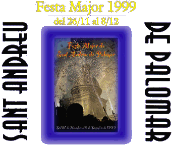

|  |  |
||||||||||||||||
|
La Junta de l'any 98 va dimitir. Costa coordinar les ganes, l'esforç, el tarannà, els interessos i, potser sobretot, el caràcter, les interpretacions i malentesos personals dels representants del munt d'Entitats que tenim en aquest Poble. Però, com no podia ser d'una altra manera, van sorgir un grapat de persones 'noves' per a tirar endavant la d'enguany. Joventut, voluntat, capacitat de sacrifici... estimació (amor) a aquest Poble, Sant Andreu de Palomar, el nostre poble, caracteritzen a aquesta nova Junta, que tant de bo persisteixi, si més no, l'any vinent. De l'Ajuntament de Barcelona (versió Districte) què se'n pot dir? Doncs si fa no fa com sempre, col·laboració amb la Comissió de Festes embolcallada de bones paraules, instruccions, preceptes, "impossibles" i normes a dojo. Les Entitats, amb ganes i esforç (l'any que ve, més!). El Butlletí d'aquest any, al ser l'últim del mil·lenni, "s'ha sortit": Tot en color, 104 pàgines, guia comercial (el Comerç andreuenc ha respost prou bé) fotografies actuals del nostre Poble, recopilació de portades de butlletins del segle XX... una feinada, però déu-n'hi-do el que ha sortit (l'any que ve, millor encara!). Tot plegat per a que disfrutem de la nostra Festa Major, la de Sant Andreu de Palomar, el nostre Poble.
|
|||||||||||||||||
| Entitats | Programa d'Actes | Inici Festa Major | Entitats Col.laboradores |